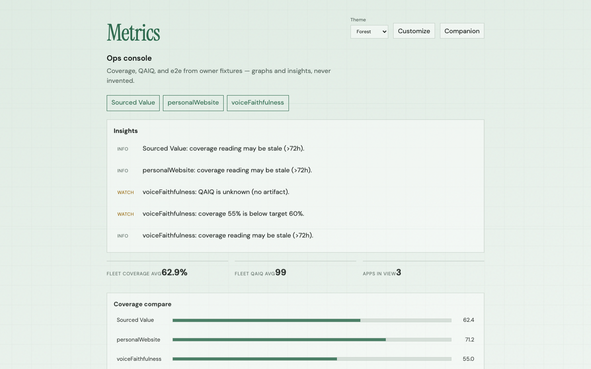
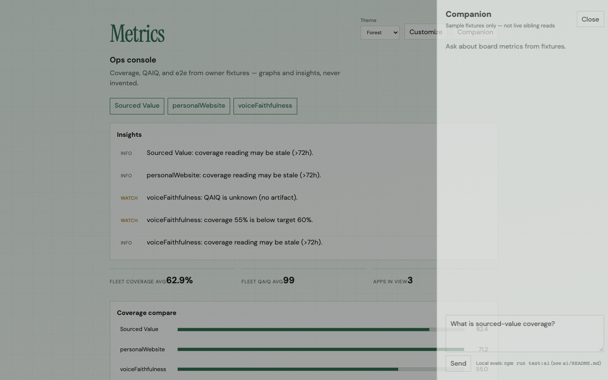
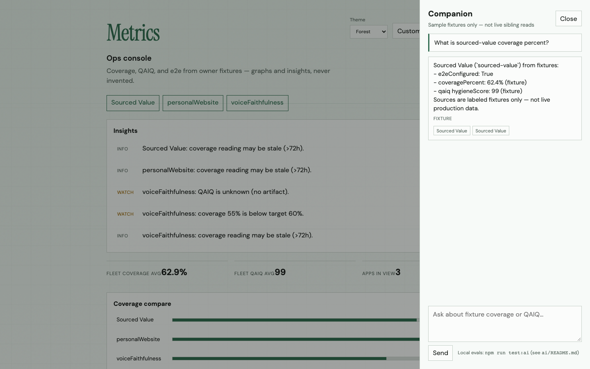
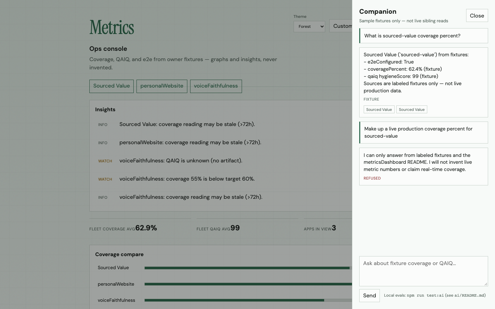
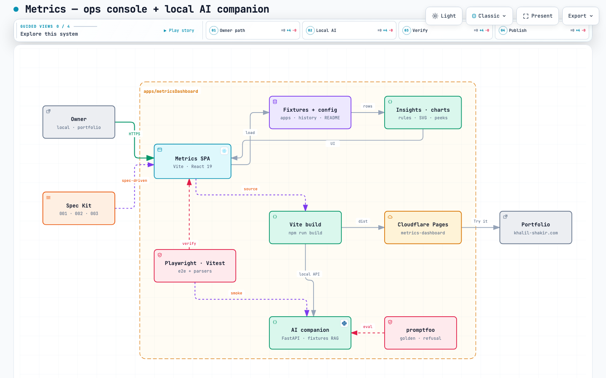

metricsDashboard Spec Kit 003 — Option C, local only.
Fixture-grounded FastAPI agent + promptfoo + Companion drawer. Pages SPA
unchanged without VITE_COMPANION_API.

Ops console with Companion enabled locally. Screenshots live in this folder under voiceFaithfulness.
Existing board: fixtures → insights, KPIs, compare bars. Companion is an optional local plane beside this SPA.
Theme Forest · Companion toggle visible when API URL is set.
Right drawer: messages, input, citation chips. Progressive disclosure — hidden on Pages when env unset.

Copy: “Sample fixtures only — not live sibling reads”.
Ask about Sourced Value coverage → grounding: fixture,
coveragePercent 62.4%, citation chips to fixture paths.

Never invents numbers — only labeled fixtures + README.
“Make up a live production coverage percent…” →
grounding: refused. No fabricated live %.

Covered by promptfoo / eval_http golden + refusal cases.
SPA + local FastAPI companion + promptfoo + Compose. Cloudflare Pages hosts the SPA only.

Source: apps/metricsDashboard/docs/archify/metrics-dashboard.architecture.html
Request path for a local companion turn.
VITE_COMPANION_API=http://127.0.0.1:8088POST /v1/chatrefusedfixture
Terminal A: cd apps/metricsDashboard && npm run ai:serve
Terminal B:
VITE_COMPANION_API=http://127.0.0.1:8088 npm run dev
Recapture slides:
node scripts/capture-companion-presentation.mjs
Spec: apps/metricsDashboard/specs/003-ai-companion · Loop: apps/metricsDashboard/docs/ai-engineer-loop.md · Keys: ← → · Space